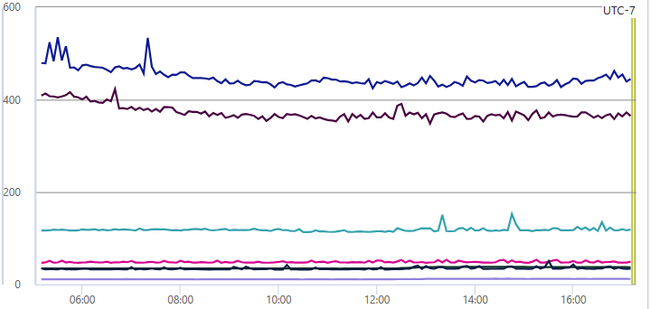

Exploring the Journey of a Read-Optimized Service
The Balancing Act in Crafting a Read-Optimized Service⌗
In the world of software engineering, I find myself immersed in the realm of a read-optimized service. Today, I’m excited to share some of the fascinating trade-offs that we’ve encountered while designing this service. Along the way, I’ll also shed light on the challenges and incidents that have shaped our journey. So, let’s embark on this insightful exploration together!
Disclaimer: I may not have the full context behind the design decisions, as they were made by the service’s previous owners. Nevertheless, I’m here to provide my perspective on these trade-offs.
Introduction⌗
A New Landscape⌗
As of June 30, 2023, I’ve been part of my current team for a year and a half. This team stands out from my previous experiences, as we manage services and components that are relatively isolated. Unlike my previous role, where we had a tightly knit system of interconnected microservices, data flowing seamlessly, and well-defined contracts between upstream and downstream. Work planning was a breeze, and collaboration was encouraged. In my current role, it feels more natural to divide team members into specialized areas of expertise. While this ownership model has its merits, it does come with some overhead for team members to familiarize themselves with other areas. This doesn’t mean collaboration isn’t encouraged; it’s just a bit more complex. I often wonder which setting is more common in the industry, and I’d love to hear your thoughts.
My Role⌗
As part of this ownership model, I was entrusted with the task of managing a particular service. Unfortunately, the previous owner left shortly after, leaving me to navigate the transition. While I would have preferred a more guided experience, my boss was supportive and gave me the space to dive into the code and make sense of the unstructured or incomplete documentation. The silver lining in this endeavor is that the challenging aspect of this service lies in its scaling, not in its business logic. The business logic is quite straightforward; it’s essentially a CRUD store! Scaling, on the other hand, is where the real excitement lies. I’ve spent two years with my previous team tackling scaling issues, and while I’m no expert, I’m immensely grateful for the knowledge I’ve gained from my mentor.
The Service⌗
The Core Purpose⌗
As previously mentioned, our service is essentially a CRUD store. Without delving too deep into the intricacies of our business, I can tell you that it’s primarily geared towards read-heavy operations, handling roughly 2000 queries per second on a global scale. The p99 latency for this service typically hovers around an impressive sub-50 milliseconds.

The Architectural Blueprint⌗
The architecture behind this distributed service system is quite fascinating, with several crucial design decisions that have significantly shaped our journey. Let’s walk through them one by one.
Regional Deployment⌗
Our service is spread across multiple regions, each housing several hosts. All these hosts are meticulously placed behind regional traffic managers, ensuring optimal performance.
Underlying Persistent Storage⌗
We opted for a globally replicated NoSQL database, avoiding the complexity of sharding.
Full In-Memory Cache⌗
One of our standout features is maintaining a complete copy of the database in an in-memory cache. When handling read requests, we query the cache instead of the underlying data store.
Cache Invalidation⌗
- Whenever we process write requests, we simultaneously record the changes in another table.
- Periodically, across all hosts, we read this change record table, query the main table, and update the in-memory cache accordingly.
The Trade-Offs⌗
With all this groundwork in place, let’s dive into the challenges. I’ll take you on a chronological journey through the incidents and hurdles my team has faced over the years.
Incident 1: The CPU Usage Surge⌗
We faced a significant spike in traffic, which triggered a CPU usage alert. Our immediate response was to horizontally scale out the service, adding more instances to the region where the alarm had been set off.
Scaling Woes⌗
While our CPU usage dropped after scaling, we were soon confronted with another problem. We began to receive “429 Too Many Requests” errors from the underlying database. This incident underscores one of the perils of scaling out services: scaling down can be sticky. In the immortal words of wisdom, “If there’s no problem, maybe don’t touch it.”
Discovering the New Bottleneck⌗
What followed was the fan-out effect. Multiple hosts were querying the same global database instance, causing the database itself to become the bottleneck. Fortunately, we hadn’t reached the limits of scaling out the database; we had only reached the capped capacity, which we could increase. In fact, today, our database alone costs more in a month than what I earn in a year. While it may seem unfair, I can’t help but wonder if this is a common practice in the industry.
Lessons Learned⌗
We realized that we needed a smarter solution for managing CPU usage issues.
Incident 2: “I Created a Record, But Can’t Find It!”⌗
The larger organization has been on a mission to enhance service reliability. We’re aiming for high reliability metrics, specifying how many nines we want to achieve. For example, four nines translate to 99.99% reliability. Achieving this metric for our service is usually a breeze, as long as there’s no crash. The service either returns data from the cache or nothing at all, ensuring that cache misses don’t compromise reliability.
The Unanswered Question⌗
However, the catch here is that the service is eventually consistent, which can lead to slight delays.
Team: “How long ago did you create the record?”
Client: “A while back.”
We haven’t committed to a specific Service Level Agreement (SLA) for eventual consistency, but if it takes hours, without revealing too much about our business logic, let’s just say that it’s not acceptable.
The Waiting Game⌗
Cache invalidation is typically set to occur within a 10-second interval. But the repercussions of our previous scaling efforts came back to haunt us. A surge in write traffic resulted in a cascade effect, with each write request amplifying the load on our database. At one point, nearly 80% of the traffic to the database was being throttled.
For each throttled request, we attempted retries without introducing jitter, meaning that after a fixed period, all hosts would bombard the database simultaneously. This classic thundering herd problem was causing some records to go missing, as they exceeded the maximum retry attempts.
A Clever Mitigation⌗
The solution? A good old-fashioned restart! I learned this trick from my father when I was five, and it still works like a charm. Restarting the host flushes the queue of changed records, offering a clean slate. The cache is then repopulated with the latest data from the database.
Lessons Learned (Part 2)⌗
We realized the importance of addressing the fan-out effect and tackling the thundering herd problem. Following the incident, we introduced jitter when retrying and transitioned the queue of changed records to a set. This change allowed us to avoid duplicate work; for instance, if record A was modified twice, we only needed to apply the change once.
Incidents 3 and Beyond: “We Need Your Team to Support Our New Feature”⌗
Many of the incidents related to this service were triggered by an upsurge in write requests without a corresponding scale-out of either the service hosts or the underlying datastore. As I’ve mentioned, our service predominantly handles read-heavy workloads, and our design decisions reflect this priority. However, this trade-off does present some challenges.
The Communication Conundrum⌗
Most of these incidents could have been prevented or at least managed better if we had foreseen the increase in write traffic and scaled out the bottlenecks accordingly.
Team: “We’re launching a new feature that will increase write traffic by tenfold.”
My Team: “Alright.”
But the reality of communication is rarely so clear-cut. Sometimes, we aren’t aware of the new feature; other times, we’re aware but uncertain of its impact. Communication gaps can arise, and it’s not always easy to predict how much a feature will increase traffic or whether it’s a one-time event or a recurring one. Oops, it seems like I’m repeating myself, but you get the idea.
A Proposed Solution⌗
In my view, clear Service Level Agreements (SLAs) between my team and our clients would go a long way in preventing surprises when it comes to anticipated traffic increases.
I’ve voiced this idea a couple of times but haven’t fully implemented it yet. My apologies to my boss! I’m gradually building connections with other teams, and I hope that, in the future, there will be fewer surprises.